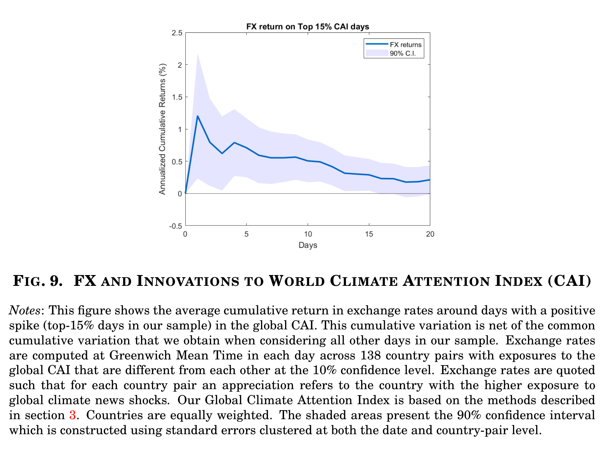
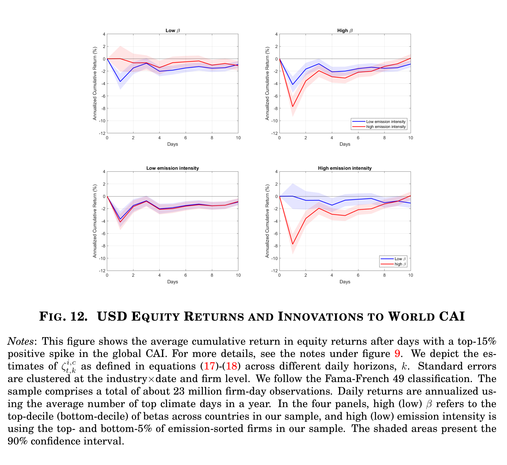
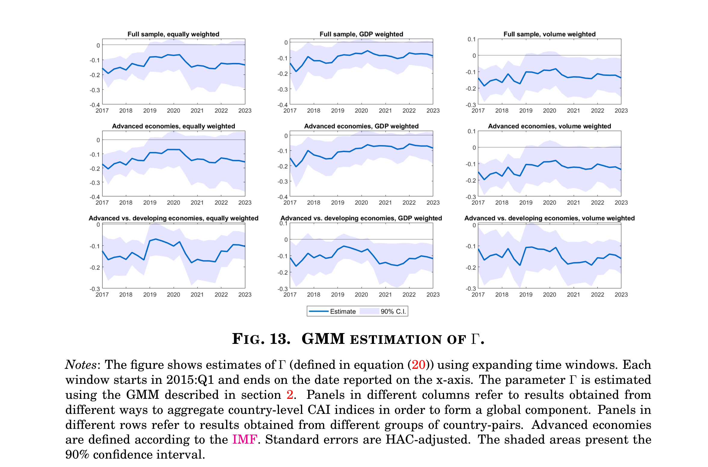

We trace the response of exchange rates, equity returns and international capital flows to spikes in global climate attention (top‑15% CAI days). In every asset class, countries and firms that are more sensitive to climate news respond more — and the effect is persistent, not a one-day blip.
Sorting country pairs by their estimated exposure to the global CAI, the currency of the more climate‑sensitive country appreciates in the days following a climate‑attention shock, and the effect persists for multiple weeks rather than reverting immediately.

Average cumulative exchange-rate return in the days after a top‑15% spike in the global CAI, net of the average on all other days. Shaded band: 90% confidence interval.
In a typical year, the currencies of high-exposure countries appreciate by roughly 1.25% on the day after a large climate-attention shock — an economically significant, and persistent, response.
We sort firms by carbon emission intensity and by their headquarter country's exposure to global climate attention (β). High-emission ("brown") firms located in highly-exposed countries see the sharpest and most persistent losses; low-emission firms, and firms in low-exposure countries, show little reaction.

Average cumulative equity return in the days after a top‑15% spike in the global CAI, by country climate-beta and firm emission intensity (Fama‑French 49 industries; ~23 million firm‑day observations).
The annualized response of high-emission firms headquartered in high-β countries is roughly −8% — comparable in magnitude to other tweet-based asset-pricing evidence in the literature.
Countries with higher climate-attention sensitivity see their current account decline relative to less exposed partners as global climate attention rises — consistent with a recursive risk-sharing mechanism in which exposed countries receive resources (capital inflows) rather than exporting more. Estimated with an expanding-window GMM from 2015 onward, the negative relationship is stable across equally-weighted, GDP-weighted and Twitter-volume-weighted versions of the global index.

Expanding-window GMM estimates of Γ, the sensitivity of the net-export differential to the global CAI, by aggregation scheme (columns) and country grouping (rows). Shaded band: 90% confidence interval.
The estimated coefficient is negative and stable across specifications, and the current-account effect can persist for up to six months.